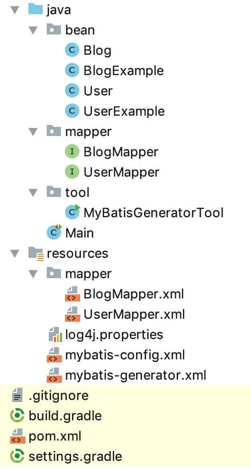
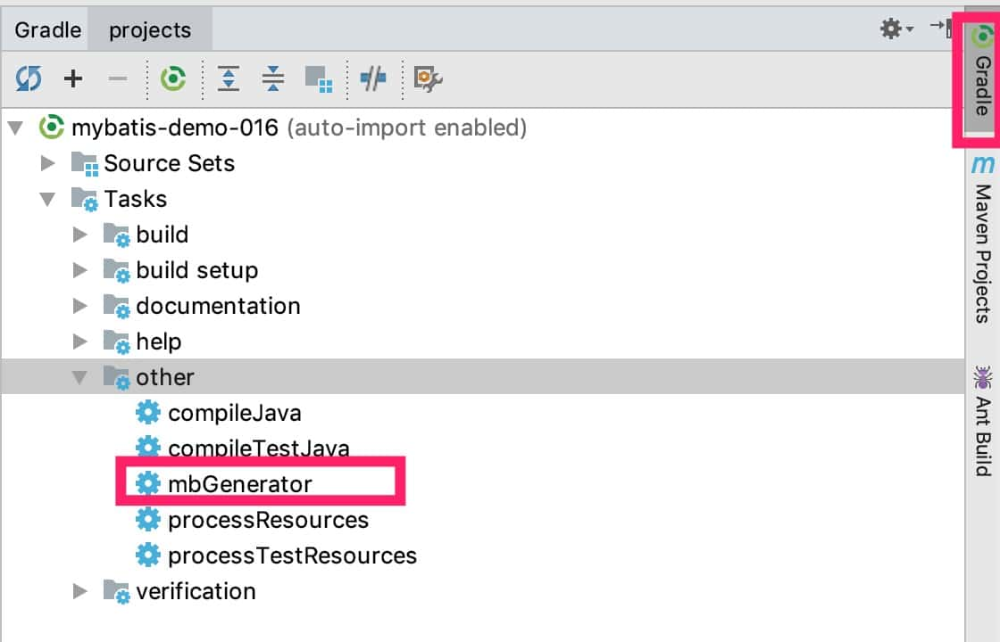

18、自动生成Mapper代码和映射XML
MyBatis的映射文件和代码，写多了就腻歪了，因为变成了重复的体力活，既然是体力活，就有可能自动化实现。这个自动化实现必须有一定的抽象程度，能尽量满足所有的业务场景。
本节示例代码在 mybatis-demo-016 。
数据准备
见 数据准备
项目结构
使用 IDEA 创建 gradle 项目，最终结构如下：

其中，User、UserExample、Blog、BlogExample、UserMapper、BlogMapper 类和接口是生成器生成的，UserMapper.xml、BlogMapper.xml 也是自动生成的。
编写生成器配置
在 resources 目录下新增 mybatis-generator.xml ，内容如下：
<?xml version="1.0" encoding="UTF-8"?>
<!DOCTYPE generatorConfiguration
PUBLIC "-//mybatis.org//DTD MyBatis Generator Configuration 1.0//EN"
"http://mybatis.org/dtd/mybatis-generator-config_1_0.dtd">
<generatorConfiguration>
<context id="MySQLTables" targetRuntime="MyBatis3">
<property name="javaFileEncoding" value="UTF-8"/>
<property name="beginningDelimiter" value="`"/>
<property name="endingDelimiter" value="`"/>
<!--支持分页-->
<plugin type="org.mybatis.generator.plugins.RowBoundsPlugin"/>
<!--生成的bean支持可序列化-->
<plugin type="org.mybatis.generator.plugins.SerializablePlugin"/>
<!--生成的bean有hashCode实现-->
<plugin type="org.mybatis.generator.plugins.EqualsHashCodePlugin"/>
<!--生成的bean有toString实现-->
<plugin type="org.mybatis.generator.plugins.ToStringPlugin"/>
<!-- 不生成注释 -->
<commentGenerator>
<property name="suppressAllComments" value="true"/>
</commentGenerator>
<!--配置数据库-->
<jdbcConnection driverClass="com.mysql.jdbc.Driver"
connectionURL="jdbc:mysql://127.0.0.1:3306/blog_db"
userId="root"
password="123456">
</jdbcConnection>
<javaTypeResolver >
<property name="forceBigDecimals" value="false" />
</javaTypeResolver>
<!--bean类-->
<javaModelGenerator targetPackage="bean" targetProject="src/main/java">
<property name="enableSubPackages" value="true" />
<property name="trimStrings" value="true" />
</javaModelGenerator>
<!--xml文件，注意XML是以追加的形式保存到文件中；如果要重新生成，先删除之前的-->
<sqlMapGenerator targetPackage="mapper" targetProject="src/main/resources">
<property name="enableSubPackages" value="true" />
</sqlMapGenerator>
<!-- mapper 接口-->
<javaClientGenerator type="XMLMAPPER" targetPackage="mapper" targetProject="src/main/java">
<property name="enableSubPackages" value="true" />
</javaClientGenerator>
<!--指定 table -->
<table tableName="user" domainObjectName="User" modelType="flat" delimitIdentifiers="true" delimitAllColumns="true">
<generatedKey column="id" sqlStatement="MySql" identity="true" />
</table>
<table tableName="blog" domainObjectName="Blog" modelType="flat" delimitIdentifiers="true" delimitAllColumns="true">
<generatedKey column="id" sqlStatement="MySql" identity="true" />
</table>
</context>
</generatorConfiguration>
增加依赖
在 build.gradle 中增加：
compile group: 'org.mybatis.generator', name: 'mybatis-generator-core', version: '1.3.7'
生成代码和XML：方案1
编写一段java代码，执行后生成Mapper代码和文件。增加tool.MyBatisGeneratorTool 类 ，内容如下：
package tool;
import org.mybatis.generator.api.MyBatisGenerator;
import org.mybatis.generator.config.Configuration;
import org.mybatis.generator.config.xml.ConfigurationParser;
import org.mybatis.generator.internal.DefaultShellCallback;
import java.io.File;
import java.util.ArrayList;
import java.util.List;
public class MyBatisGeneratorTool {
public static void main(String[] args) throws Exception {
List<String> warnings = new ArrayList<>();
boolean overwrite = true;
File configFile = new File(MyBatisGeneratorTool.class.getResource("/mybatis-generator.xml").getPath());
ConfigurationParser cp = new ConfigurationParser(warnings);
Configuration config = cp.parseConfiguration(configFile);
// 虽然overwrite为true，但只针对java代码。
// XML是以追加的形式保存到文件中；如果要重新生成，先删除之前的XML
DefaultShellCallback callback = new DefaultShellCallback(overwrite);
MyBatisGenerator myBatisGenerator = new MyBatisGenerator(config, callback, warnings);
myBatisGenerator.generate(null);
}
}
执行后会自动生成我们需要的代码和xml。
这种方案有两个问题：
问题1：XML是以追加的形式保存到文件中；如果要重新生成，先删除之前的XML。
问题2：如果删除了生成的mapper，而业务代码里已经引用他们了。那么在IDEA中再运行这里的代码，会因为其他代码有问题而报错。
生成代码和XML：方案2
该方案需要先安装maven。原理是使用生成器对应的Maven插件。
在项目根目录下增加 pom.xml ，内容如下：
<?xml version="1.0" encoding="UTF-8"?>
<project xmlns="http://maven.apache.org/POM/4.0.0"
xmlns:xsi="http://www.w3.org/2001/XMLSchema-instance"
xsi:schemaLocation="http://maven.apache.org/POM/4.0.0 http://maven.apache.org/xsd/maven-4.0.0.xsd">
<modelVersion>4.0.0</modelVersion>
<groupId>com.example</groupId>
<artifactId>mybatis-demo</artifactId>
<version>1.0-SNAPSHOT</version>
<!-- 执行 `mvn mybatis-generator:generate` 命令即可 -->
<build>
<plugins>
<plugin>
<groupId>org.mybatis.generator</groupId>
<artifactId>mybatis-generator-maven-plugin</artifactId>
<version>1.3.7</version>
<configuration>
<configurationFile>src/main/resources/mybatis-generator.xml</configurationFile>
<verbose>true</verbose>
<overwrite>true</overwrite>
</configuration>
<executions>
<execution>
<id>Generate MyBatis Artifacts</id>
<goals>
<goal>generate</goal>
</goals>
</execution>
</executions>
<!--plugin的依赖-->
<dependencies>
<dependency>
<groupId>mysql</groupId>
<artifactId>mysql-connector-java</artifactId>
<version>5.1.46</version>
</dependency>
</dependencies>
</plugin>
</plugins>
</build>
<!--代码使用的依赖-->
<dependencies>
</dependencies>
</project>
这是样板设置，<configurationFile>src/main/resources/mybatis-generator.xml</configurationFile>这里根据需要修改生成器配置文件位置即可，其他不需要改动。
在命令行中进入项目根目录，然后执行下面的命令：
mvn mybatis-generator:generate
即可生成代码和XML。
该方案仍有一个问题：XML是以追加的形式保存到文件中；如果要重新生成，先删除之前的XML。
生成代码和XML：方案3
使用生成器的gradle插件，并优化对应的生成器任务。
在 build.gradle 中添加：
buildscript {
repositories {
mavenCentral()
maven {
url "https://plugins.gradle.org/m2/"
}
}
dependencies {
classpath "gradle.plugin.com.thinkimi.gradle:mybatis-generator-plugin:2.0"
}
}
apply plugin: "com.thinkimi.gradle.MybatisGenerator"
configurations {
mybatisGenerator
}
// 执行 `gradle mbGenerator` 即可
mybatisGenerator {
verbose = true
configFile = 'src/main/resources/mybatis-generator.xml'
}
// 执行 mbGenerator 前先清理文件
mbGenerator.doFirst {
delete "${rootDir}/src/main/resources/mapper/"
println "delete mapper xml in src/main/resources/mapper/"
}
上面的主要部分来自：https://plugins.gradle.org/plugin/com.arenagod.gradle.MybatisGenerator 、https://github.com/kimichen13/mybatis-generator-plugin 。我额外增加了运行mbGenerator任务前自动清理文件的配置。
在命令行执行 gradle mbGenerator 即可。
也可以在 IDEA 中找到该任务，点击执行：

使用示例
在 Main 中增加：
import java.io.IOException;
import java.util.HashMap;
import java.util.List;
import java.util.Map;
import bean.Blog;
import bean.BlogExample;
import lombok.Data;
import lombok.extern.slf4j.Slf4j;
import mapper.BlogMapper;
import org.apache.ibatis.io.Resources;
import org.apache.ibatis.session.RowBounds;
import org.apache.ibatis.session.SqlSession;
import org.apache.ibatis.session.SqlSessionFactory;
import org.apache.ibatis.session.SqlSessionFactoryBuilder;
import bean.User;
import mapper.UserMapper;
import org.junit.Test;
@Slf4j
public class Main {
@Test
public void test_01() throws IOException {
try (SqlSession sqlSession = getSqlSession()){
UserMapper userMapper = sqlSession.getMapper(UserMapper.class);
BlogMapper blogMapper = sqlSession.getMapper(BlogMapper.class);
User user = userMapper.selectByPrimaryKey(1L);
Blog blog = blogMapper.selectByPrimaryKey(1L);
log.info("user: {}", user);
log.info("blog: {}", blog);
}
}
@Test
public void test_02() throws IOException {
try (SqlSession sqlSession = getSqlSession()){
UserMapper userMapper = sqlSession.getMapper(UserMapper.class);
BlogMapper blogMapper = sqlSession.getMapper(BlogMapper.class);
Blog blog = new Blog();
blog.setOwnerId(1L);
blog.setTitle("你好, World");
blog.setContent("你好, 😆");
int result = blogMapper.insertSelective(blog);
log.info("result: {}", result);
log.info("blog: {}", blog);
}
}
@Test
public void test_03() throws IOException {
try (SqlSession sqlSession = getSqlSession()){
UserMapper userMapper = sqlSession.getMapper(UserMapper.class);
BlogMapper blogMapper = sqlSession.getMapper(BlogMapper.class);
BlogExample blogExample = new BlogExample();
blogExample.createCriteria().andIdBetween(1L, 4L);
blogExample.setOrderByClause("id asc");
// 不要用 selectByExample，用selectByExampleWithBLOBs，因为 title、content类型为text，会被当做blob。
// List<Blog> blogList = blogMapper.selectByExample(blogExample);
List<Blog> blogList = blogMapper.selectByExampleWithBLOBs(blogExample);
blogList.forEach( item -> {
log.info("blog: {}", item);
});
}
}
@Test
public void test_04() throws IOException {
try (SqlSession sqlSession = getSqlSession()){
UserMapper userMapper = sqlSession.getMapper(UserMapper.class);
BlogMapper blogMapper = sqlSession.getMapper(BlogMapper.class);
BlogExample blogExample = new BlogExample();
blogExample.setOrderByClause("id desc");
RowBounds rowBounds = new RowBounds(0, 2); // offset 为0， limit 为2
List<Blog> blogList = blogMapper.selectByExampleWithBLOBsWithRowbounds(blogExample, rowBounds);
blogList.forEach( item -> {
log.info("blog: {}", item);
});
}
}
/**
* 获取 SqlSession
*/
private SqlSession getSqlSession() throws IOException {
SqlSessionFactory sessionFactory;
sessionFactory = new SqlSessionFactoryBuilder()
.build(Resources.getResourceAsReader("mybatis-config.xml"));
return sessionFactory.openSession();
}
}
这里给了4个示例。
test_01示例是根据id查询user和blog ，结果是：
INFO [main] - user: User [Hash = -1981177266, id=1, name=letian, email=letian@111.com, password=123, serialVersionUID=1]
INFO [main] - blog: Blog [Hash = 857656589, id=1, ownerId=1, title=标题1, content=文本1, serialVersionUID=1]
test_02示例是新增一篇博客，运行结果如下：
INFO [main] - result: 1
INFO [main] - blog: Blog [Hash = -407908845, id=8, ownerId=1, title=你好, World, content=你好, 😆, serialVersionUID=1]
注意，因为没有commit，所以这条数据并未真正插入数据库。
test_03示例是查询id在[1,4]范围的博客，按照id升序排序，运行结果是：
INFO [main] - blog: Blog [Hash = 857656589, id=1, ownerId=1, title=标题1, content=文本1, serialVersionUID=1]
INFO [main] - blog: Blog [Hash = 857686412, id=2, ownerId=1, title=标题2, content=文本2, serialVersionUID=1]
INFO [main] - blog: Blog [Hash = 857716235, id=3, ownerId=1, title=标题3, content=文本3, serialVersionUID=1]
INFO [main] - blog: Blog [Hash = 857746058, id=4, ownerId=1, title=标题4, content=文本4, serialVersionUID=1]
test_04示例是按照id降序获取前两篇博客，运行结果：
INFO [main] - blog: Blog [Hash = -407938636, id=7, ownerId=1, title=你好, World, content=你好, 😆, serialVersionUID=1]
INFO [main] - blog: Blog [Hash = 789074769, id=6, ownerId=2, title=标题21, content=文本21, serialVersionUID=1]